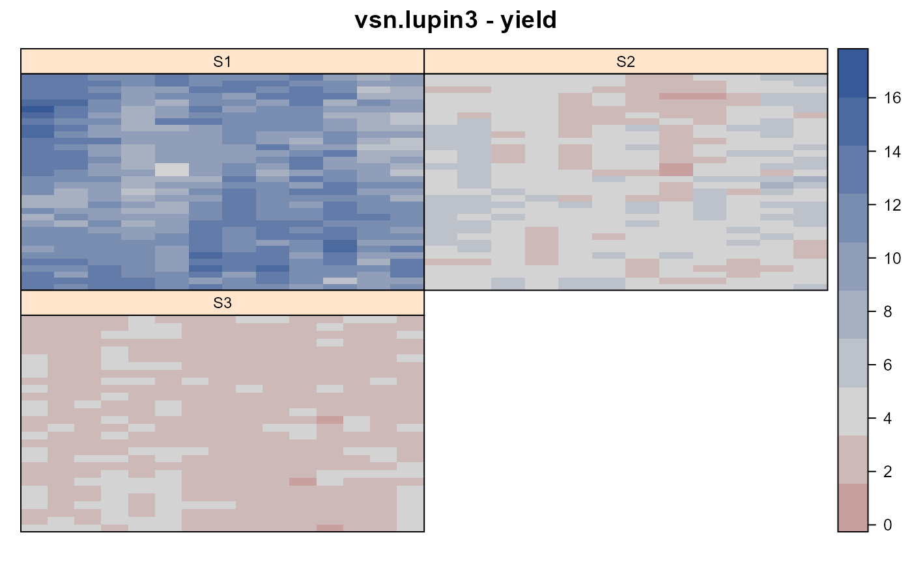
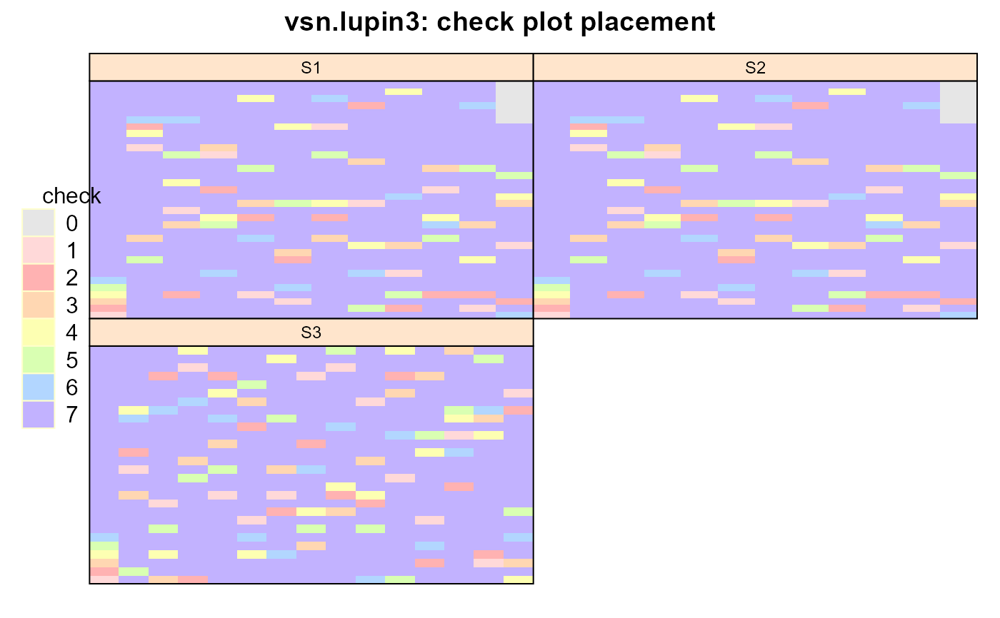

vsn.lupin3.RdEarly generation lupin trial with 3 sites, 330 test lines, 6 check lines.
A data frame with 1236 observations on the following 5 variables.
sitesite, levels S1 S2 S3
colcolumn
rowrow
gengenotype
yieldyield
An early-stage multi-environment trial, with 6 check lines and 300 test lines. The 6 check lines were replicated in each environment.
Used with permission of Arthur Gilmour, Brian Cullis, Robin Thompson.
Multi-Environment Trials - Lupins. https://www.vsni.co.uk/software/asreml/htmlhelp/asreml/xlupin.htm
# \dontrun{ library(agridat) data(vsn.lupin3) dat <- vsn.lupin3 # Split gen into check/test, make factors dat <- within(dat, { check <- ifelse(gen>336, 0, gen) check <- ifelse(check<7, check, 7) check <- factor(check) test <- factor(ifelse(gen>6 & gen<337, gen, 0)) gen=factor(gen) }) libs(desplot) desplot(dat, yield~ col*row|site, # midpoint="midrange", # aspect unknown main="vsn.lupin3 - yield")# Site 1 & 2 used same randomization desplot(dat, check~ col*row|site, main="vsn.lupin3: check plot placement")# asreml 4 libs(asreml,lucid) # Single-site analyses suggested random row term for site 3, # random column terms for all sites, # AR1 was unnecessary for the col dimension of site 3 dat <- transform(dat, colf=factor(col), rowf=factor(row)) dat <- dat[order(dat$site, dat$colf, dat$rowf),] # Sort for asreml m1 <- asreml(yield ~ site + check:site, data=dat, random = ~ at(site):colf + at(site,3):rowf + test, residual = ~ dsum( ~ ar1(colf):ar1(rowf) + id(colf):ar1(rowf) | site, levels=list(1:2, 3) ) )#> Multi-section model using the sigma parameterization. #> ASReml 4.1.0 Fri Dec 11 17:51:09 2020 #> LogLik Sigma2 DF wall cpu #> 1 -615.620 1.0 1213 17:51:09 0.0 (3 restrained) #> 2 -424.081 1.0 1213 17:51:09 0.0 #> 3 -355.609 1.0 1213 17:51:09 0.0 #> 4 -325.217 1.0 1213 17:51:09 0.0 #> 5 -315.664 1.0 1213 17:51:10 0.0 #> 6 -314.402 1.0 1213 17:51:10 0.0 #> 7 -314.276 1.0 1213 17:51:10 0.0 #> 8 -314.263 1.0 1213 17:51:10 0.0 #> 9 -314.262 1.0 1213 17:51:10 0.0m1$loglik#> [1] -314.2617## [1] -314.2616 vc(m1)#> effect component std.error z.ratio bound %ch #> at(site, S1):colf 0.6234 0.4287 1.5 P 0.3 #> at(site, S2):colf 0.1592 0.1141 1.4 P 0.2 #> at(site, S3):colf 0.04832 0.02618 1.8 P 0 #> at(site, S3):rowf 0.0235 0.008483 2.8 P 0 #> test 0.1031 0.01468 7 P 0 #> site_S1!R 2.77 0.313 8.8 P 0.1 #> site_S1!colf!cor 0.196 0.05375 3.6 U 0.1 #> site_S1!rowf!cor 0.6501 0.03873 17 U 0.1 #> site_S2!R 0.9924 0.1078 9.2 P 0 #> site_S2!colf!cor 0.2868 0.05246 5.5 U 0 #> site_S2!rowf!cor 0.5743 0.04209 14 U 0 #> site_S3!R 0.1204 0.01875 6.4 P 0 #> site_S3!rowf!cor 0.6394 0.06324 10 U 0## effect component std.error z.ratio constr ## at(site, S1):colf!colf.var 0.6228 0.4284 1.5 pos ## at(site, S2):colf!colf.var 0.159 0.1139 1.4 pos ## at(site, S3):colf!colf.var 0.04832 0.02618 1.8 pos ## at(site, S3):rowf!rowf.var 0.0235 0.008483 2.8 pos ## test!test.var 0.1031 0.01468 7 pos ## site_S1!variance 2.771 0.314 8.8 pos ## site_S1!colf.cor 0.1959 0.05375 3.6 uncon ## site_S1!rowf.cor 0.6503 0.03873 17 uncon ## site_S2!variance 0.9926 0.1079 9.2 pos ## site_S2!colf.cor 0.2868 0.05246 5.5 uncon ## site_S2!rowf.cor 0.5744 0.0421 14 uncon ## site_S3!variance 0.1205 0.01875 6.4 pos ## site_S3!rowf.cor 0.6394 0.06323 10 uncon # Add site:test m2 <- update(m1, random=~. + site:test)#> Multi-section model using the sigma parameterization. #> ASReml 4.1.0 Fri Dec 11 17:51:10 2020 #> LogLik Sigma2 DF wall cpu #> 1 -733.725 1.0 1213 17:51:10 0.1 (7 restrained) #> 2 -389.989 1.0 1213 17:51:10 0.1 #> 3 -342.919 1.0 1213 17:51:10 0.1 #> 4 -319.635 1.0 1213 17:51:11 0.1 #> 5 -311.958 1.0 1213 17:51:11 0.1 #> 6 -310.972 1.0 1213 17:51:11 0.1 #> 7 -310.889 1.0 1213 17:51:11 0.1 #> 8 -310.881 1.0 1213 17:51:11 0.1 #> 9 -310.880 1.0 1213 17:51:11 0.1m2$loglik#> [1] -310.8795## [1] -310.8794 # CORUH structure on the site component of site:test m3 <- asreml(yield ~ site + check:site, data=dat, random = ~ at(site):colf + at(site,3):rowf + corh(site):test, residual = ~ dsum( ~ ar1(colf):ar1(rowf) + id(colf):ar1(rowf) | site, levels=list(1:2, 3) ))#> Multi-section model using the sigma parameterization. #> ASReml 4.1.0 Fri Dec 11 17:51:11 2020 #> LogLik Sigma2 DF wall cpu #> 1 -532.783 1.0 1213 17:51:11 0.1 (2 restrained) #> 2 -411.201 1.0 1213 17:51:11 0.0 #> 3 -335.554 1.0 1213 17:51:11 0.0 #> 4 -303.565 1.0 1213 17:51:11 0.0 #> 5 -292.148 1.0 1213 17:51:12 0.0 #> 6 -289.310 1.0 1213 17:51:12 0.1 (1 restrained) #> 7 -288.550 1.0 1213 17:51:12 0.1 (1 restrained) #> 8 -288.487 1.0 1213 17:51:12 0.0 (1 restrained) #> 9 -288.484 1.0 1213 17:51:12 0.0 (1 restrained) #> 10 -288.484 1.0 1213 17:51:12 0.0 (1 restrained)#> Warning: Some components changed by more than 1% on the last iteration.m3$loglik#> [1] -288.4837## [1] -288.4837 # Unstructured genetic variance matrix m4 <- asreml(yield ~ site + check:site, data=dat, random = ~ at(site):colf + at(site,3):rowf + us(site):test, residual = ~ dsum( ~ ar1(colf):ar1(rowf) + id(colf):ar1(rowf) | site, levels=list(1:2, 3) ))#> Multi-section model using the sigma parameterization. #> ASReml 4.1.0 Fri Dec 11 17:51:12 2020 #> LogLik Sigma2 DF wall cpu #> 1 -531.256 1.0 1213 17:51:12 0.1 (2 restrained)#> Warning: US updates modified 1 times in iteration 2 to remain positive definite.#> 2 -411.627 1.0 1213 17:51:12 0.0 (6 restrained)#> Warning: US updates modified 1 times in iteration 3 to remain positive definite.#> 3 -333.071 1.0 1213 17:51:12 0.1 (6 restrained)#> Warning: US updates modified 1 times in iteration 4 to remain positive definite.#> 4 -302.555 1.0 1213 17:51:12 0.1 (6 restrained)#> Warning: US updates modified 1 times in iteration 5 to remain positive definite.#> 5 -291.384 1.0 1213 17:51:12 0.1 (6 restrained) #> 6 -288.359 1.0 1213 17:51:12 0.1 (1 restrained) #> 7 -286.890 1.0 1213 17:51:12 0.0 (1 restrained) #> 8 -286.828 1.0 1213 17:51:12 0.1 (1 restrained) #> 9 -286.825 1.0 1213 17:51:12 0.1 (1 restrained) #> 10 -286.824 1.0 1213 17:51:12 0.1 (1 restrained)#> Warning: US variance structures were modified in 4 instances to make them positive definite#> Warning: Some components changed by more than 1% on the last iteration.m4$loglik#> [1] -286.8242## [1] -286.8239 # Note that a 3x3 unstructured matrix can be written LL'+Psi with 1 factor L # Explicitly fit the factor analytic model m5 <- asreml(yield ~ site + check:site, data=dat, random = ~ at(site):colf + at(site,3):rowf + fa(site,1, init=c(.7,.1,.1,.5,.3,.2)):test, residual = ~ dsum( ~ ar1(colf):ar1(rowf) + id(colf):ar1(rowf) | site, levels=list(1:2, 3) ))#> Multi-section model using the sigma parameterization. #> ASReml 4.1.0 Fri Dec 11 17:51:12 2020 #> LogLik Sigma2 DF wall cpu #> 1 -530.602 1.0 1213 17:51:13 0.1 (4 restrained) #> 2 -380.673 1.0 1213 17:51:13 0.1 (2 restrained) #> 3 -310.637 1.0 1213 17:51:13 0.1 (1 restrained) #> 4 -294.195 1.0 1213 17:51:13 0.1 (1 restrained) #> 5 -288.494 1.0 1213 17:51:13 0.1 (2 restrained) #> 6 -287.011 1.0 1213 17:51:13 0.1 (1 restrained) #> 7 -286.855 1.0 1213 17:51:13 0.1 (1 restrained) #> 8 -286.849 1.0 1213 17:51:13 0.1 (1 restrained) #> 9 -286.848 1.0 1213 17:51:13 0.1 (1 restrained)#> Warning: Some components changed by more than 1% on the last iteration.m5$loglik # Same as m4#> [1] -286.8484## [1] -286.8484 # Model 4, Unstructured (symmetric) genetic variance matrix un <- diag(3) un[upper.tri(un,TRUE)] <- m4$vparameters[5:10] round(un+t(un)-diag(diag(un)),3)#> [,1] [,2] [,3] #> [1,] 0.992 0.158 0.132 #> [2,] 0.158 0.072 0.078 #> [3,] 0.132 0.078 0.122## [,1] [,2] [,3] ## [1,] 0.992 0.158 0.132 ## [2,] 0.158 0.073 0.078 ## [3,] 0.132 0.078 0.122 # Model 5, FA matrix = LL'+Psi. Not quite the same as unstructured, # since the FA model fixes site 2 variance at 0. psi <- diag(m5$vparameters[5:7]) lam <- matrix(m5$vparameters[8:10], ncol=1) round(tcrossprod(lam,lam)+psi,3)#> [,1] [,2] [,3] #> [1,] 0.991 0.156 0.133 #> [2,] 0.156 0.092 0.078 #> [3,] 0.133 0.078 0.122## [,1] [,2] [,3] ## [1,] 0.991 0.156 0.133 ## [2,] 0.156 0.092 0.078 ## [3,] 0.133 0.078 0.122 # }